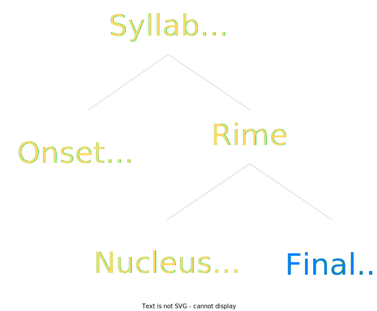
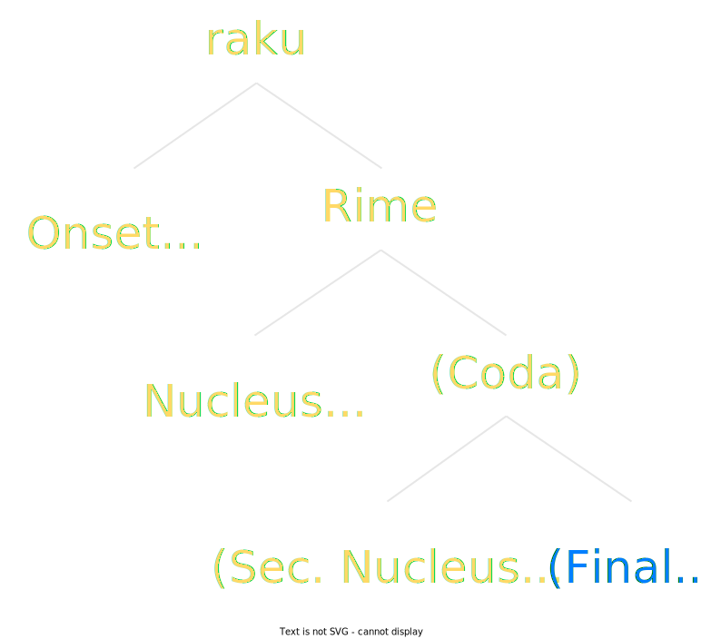
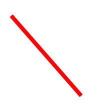
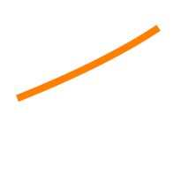
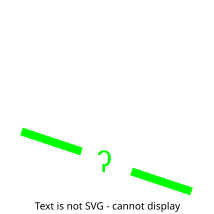
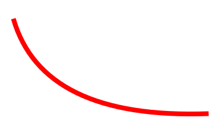
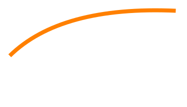
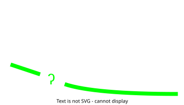
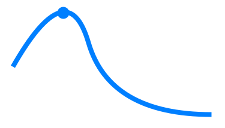

Phonology
Toaq has 22 consonant phonemes and five vowel phonemes. Syllables have the form CV(Q). There are no consonant clusters in syllable onsets, but a coda consonant may end up adjacent to the initial consonant of the following syllable.
Toaq is a tonal language featuring both syntactic tone and lexical tone.
Consonants
| Labial | Alveolar | Palatal | Velar | Glottal | Variable |
|
|---|---|---|---|---|---|---|
| Nasals | m | n | ɲ | ŋ | ||
| Plosives | pʰ b | tʰ d | kʰ g | ʔ | ||
| Affricates | t͡sʰ d͡z | t͡ɕʰ d͡ʑ | ||||
| Fricatives | f | s | ɕ | h | ||
| Taps | ɾ | |||||
| Laterals | l | |||||
| Approx. | w~j |
Any consonant other than /ŋ/ can appear syllable-initially. When disscussing syllable structure, initial consonants are abbreviated as C.
/ŋ/ can only appear in syllable-final position.
/w~j/ can only appear word-initially. The main complementizer begins with this phoneme, making clause boundaries and especially sentence boundaries more distinct and even able to withstand a lack of tone and stress.
/w~j/ dissimilates from a preceding vowel (of the previous word):
• after /i/ and /ɛ/, it is pronounced [w]
• after /u/ and /o/, it is pronounced [j]
• after /a/, and after a consonant, either allophone is permissible.
/ɲ/ can be pronounced [ɲ] or [nj].
Vowels
Toaq has five vowel phonemes (V):
| Phoneme | Allophones |
|---|---|
| /a/ | always [a] |
| /u/ | [u] in open syllables [ʊ] in closed syllables |
| /i/ | [i] in open syllables [ɪ] in closed syllables |
| /o/ | [o] in open syllables [ɔ] in closed syllables |
| /ɛ/ | normally [ɛ], but [e] when followed by a vowel other than /i/ |
A syllable is "closed" if it ends in /ŋ/. Otherwise (if it ends in a vowel or /m/) it is "open".
In stressed, open syllables, vowels are pronounced long, otherwise they are pronounced short. Coda-/m/ does not cause a change in vowel length or quality like coda-/ŋ/ does.
For example, nogı is pronounced [ˈnoː.gi], noqgı is pronounced [ˈnɔŋ.gi], and nomgı is pronounced [ˈnoːm.gi].
Toaq has four falling dipthongs. When discussing syllable structure, these are abbreviated as F:
| Phoneme | Allophones |
|---|---|
| /ai/ | [aɪ̯] [aj] |
| /ao/ | [aː.o] (only in stressed syllables) [aʊ̯] [aw] |
| /oi/ | [ɔɪ̯] [ɔj] |
| /ei/ | [ɛɪ̯] [ɛj] |
All the allophones are in free variation and can be picked based on personal preference.
Any combination of two vowels other than the falling diphthongs above is pronounced disyllabically.
Phonotactic constraints
The same vowel may not appear more than once in a row: /aa/, /uu/, /ii/, /oo/, /ɛɛ/ are impermissible.
/a/ may not be followed by any vowel with which it does not form a falling dipthong.
/o/ may not be followed by /u/.
When two /m/ meet at a syllable boundary, a schwa must be inserted between them.
/w~j/ cannot precede /i/ or /u/.
/ɲ/ cannot precede /i/.
Syllables
Syllable pattern
All Toaq syllables have the shape
(C)V(Q) or (C)F
C = onset consonant
V = vowel
F = falling diphthong
Q = {/ŋ/, /m/}
Word-initial syllables must contain an onset, while word-internal syllables may lack an onset.
The raku is a Toaq-specific syllable-like unit. It is significant because:
• Toaq speakers tend to perceive words in raku-sized chunks
• Most of the core root words are one raku long
• Derivational prefixes are raku-sized
The raku can be defined as follows:
raku pattern
A raku consists of a mandatory onset, followed by a rime, which consists of a mandatory nucleus followed by an optional coda. The coda consists of two optional components: the secondary nucleus and the final.
The onset is an initial consonant (C), which is any consonant that isn't /ŋ/.
The nucleus is any vowel (V) or any falling dipthong (F).
The secondary nucleus is any vowel (V) or any falling dipthong (F).
The final is either /ŋ/ or /m/ (Q).
When either nucleus contains a falling dipthong, no further material can follow it in the same raku.
When both nuclei are non-empty, they are separated by a hiatus.
In simple terms, a raku is a sequence of up to two syllables containing at most one initial consonant.
According to the above rules, the possible raku shapes are:
| CV, CVQ, CF, CVV, CVF, CVVQ |
The following are examples of each raku shape:
| CV sha, hu, e |
| CVQ baq, kuq, aq |
| CF sao, meı, kaı |
| CVV bua, sıo, nue |
| CVF kuaı, muao, rueı |
| CVVQ juaq, seoq, moaq |
For reference, the following grid contains every possible raku rime (in slightly abstracted form for reasons of space). Any missing cells are due to more general phonotactic constraints, rather than being raku-specific exceptions.
| a | |||||||||||
| u | ua | uaQ | uı | uıQ | uo | uoQ | ue | ueQ | uF | ||
| ı | ıa | ıaQ | ıu | ıuQ | ıo | ıoQ | ıe | ıeQ | ıF | ||
| o | oa | oaQ | oe | oeQ | oF | ||||||
| e | ea | eaQ | eu | euQ | eo | eoQ | eF | ||||
| aı | |||||||||||
| ao | |||||||||||
| oı | |||||||||||
| eı |
(The oF and eF rimes exclude the forms *ooı and *eeı, because they contain repeated vowels, which are impermissable.)
Tones
Toaq distinguishes four tones:
Tone contours and tone marks
|  |  |  |  |
| Falling tone | Rising tone | Low glottal tone | Rising-falling tone |
 |
 |
 |
 |
Every word in the language carries exactly one of these four tones. The tone stretches across the entire word.
The rising-falling tone inserts a hiatus into the first vowel of the stressed syllable. This is because the rising portion of the tone is unstressed, and stress must always fall within the first vowel of a word. Therefore, tîa is pronounced [tʰi.ˈiːa], with the rising portion covering the first, unstressed, syllable, and the falling portion covering the second, stressed, syllable, which still contains the first vowel of the word.
Allotones / Sandhi
Whenever two consecutive words carry the rising tone , the second rising tone may optionally be pronounced as a low tone.
RR → RL
RRR → RLR
The rising-falling tone can optionally be pronounced as a falling-rising tone, or really any contour which contains a hiatus. Because of this, the tone is also known as the hiatus tone, after its defining characteristic.
When this allotone is used on a raku containing multiple vowels, the hiatus is inserted between the first and second vowel, and no additional hiatus needs to be inserted, because the first vowel already carries a stressed downward tone contour.

After a pause, such as when pausing briefly between sentences, the falling tone can optionally be pronounced as an unstressed low tone.
Word segmentation
Every word is stressed on the first syllable. Starting from the stressed syllable, the word-tone stretches across the entire word. When the word has multiple syllables, the tone plateaus once it reaches the top or the bottom of the speaker's speaking range.
|  |  |  |  |
| Falling tone | Rising tone | Low glottal tone | Rising-falling tone |
At word boundaries there is a break or jump in the tonal pitch contour, which adds another layer to the word boundary contrast:
Word boundary contrast
• stress
• vowel length
• tonal contour break